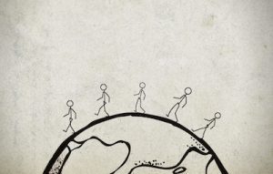

HAPPY FEET 👞👟
The average moderately active person take around 7,500 step/day.
If you maintain that daily average
and live until 80 years of age,
you’ll have walked about 2.16 cr steps in your lifetime.
Doing the math;the average person with the average stride living
until 80 will walk a distance of around 110,000 miles.
Which is the equivalent of walking about 5 times around the Earth, right on the equator.

If we walk so much we need to take care of our feet and make walking a happy experience
Do you know ?
Our feet also have emotions
Nervousness, stress, fear, anxiety, caution, boredom,
restlessness, happiness, joy, hurt, shyness, coyness,
humility, awkwardness, confidence, subservience, depression, lethargy, playfulness,
sensuality, and anger
can all manifest through the feet and legs.
ABOUT ME
Hello! my name is Medhansh Kapoor.
I am 11 years old.
My hobby is to draw, play and create games/websites.
I got inspired to create this website due to this wistful incident which i wanted to
share with you.
ME AND MY FATHER WERE WALKING NEARBY TO BUY GROCERIES
.
ON MY WAY I FOUND A KID WALKING WITH NO SHOES AND HIS FEET WERE BLEEDING.
I IMMEDIATELY CALLED MY FATHER AND HE BOUGHT HIM SOME SLIPPERS AND BAND AIDS.
I WAS DEVASTATED TO SEE THE KID SO
I thought can we be usefull to these children and
donate our old SHOES,SANDALS, SLIPPERS to the needy.
THIS IS THE WEBSITE WHERE YOU CAN DONATE YOUR SHOES, SANDALS, SLIPPERS TO THE NEEDY.
LETS TAKE ONE STEP CLOSER TO HUMANITY .
It might not be much but still we can donate.
Every time there is something which we dont need we give it to maids.
That is good but we need to give that things to the person
Who really needs that things.
DONATE
When you donate your shoes to us.We will take a photo giving it to needy.
So that that you can make sure that we are giving it to the indigents.
GALLERY
"JUST ON SMILE ON KIDS FACE"
.jpg)
.jpg)
.jpg)
.jpg)